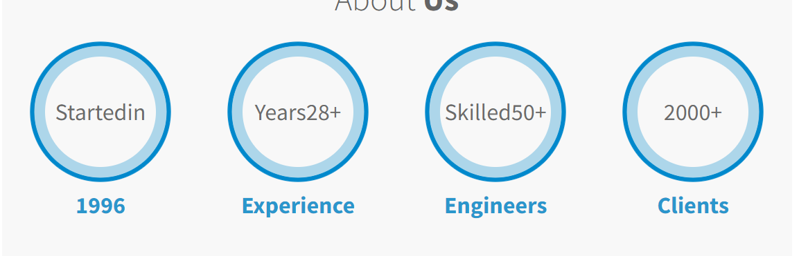
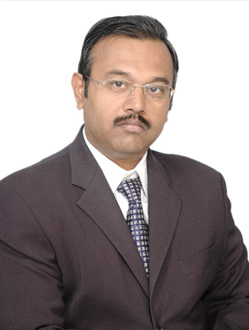

Trusted biomedical and radiology equipment supplier in India
KS Biomed Services delivers advanced medical imaging and diagnostic solutions to hospitals, diagnostic centers, and healthcare institutions.

Who Are We?
With over 30 years of industry experience, we specialize in the sales, installation, and servicing of Digital Radiography systems, Computed Radiography systems, X-ray machines, ultrasound machines, mammography machines, bone densitometry systems, diagnostic equipment, imaging consumables, and accessories.
Based in Gujarat and serving clients across India, we are known for reliable products, technical expertise, customized solutions, and prompt after-sales support.
Solutions for clinics and large healthcare institutions

Mr. Kaushik S Shah
K S Biomed Services is led by Mr. Kaushik S. Shah, a seasoned professional with over three decades of experience in the biomedical and healthcare technology industry. He began his career with Siemens, Ahmedabad from 1987 to 1996, handling advanced systems including X-ray, ultrasound, ventilators, CT, MRI, and Cath-Lab equipment.
In 1996, he founded K S Biomed Services with a vision to deliver MNC-level after-sales service and dependable solutions to healthcare providers.